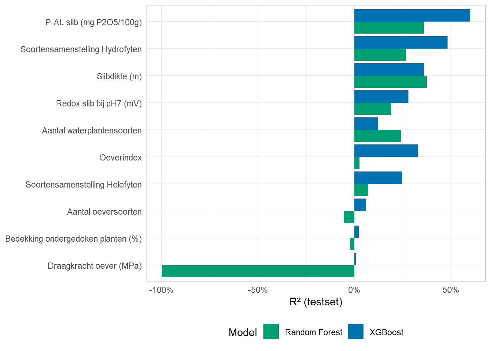
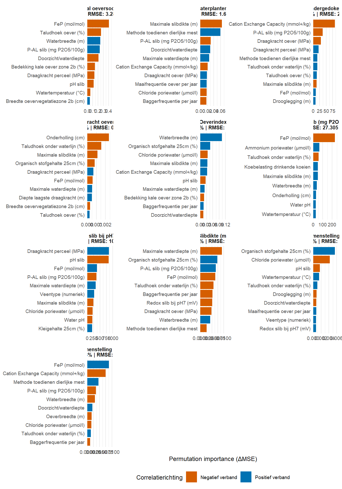

library(data.table)
library(ggplot2)
library(patchwork)
library(knitr)Modellering w beelden VeeST: XGBoost, Random Forest en GAM
Note
This report wasm generated using AI under general human direction. At the time of generation, the contents have not been comprehensively reviewed by a human analyst.
# Pas workspace aan indien nodig
workspace <- paste0(Sys.getenv("NMI-SITE"), 'O 1900 - O 2000/1922.N.23 VeeST vwsloot vd toekomst/05. Data/')
rds_dir <- paste0(workspace, "output/rapport/")
performance_summary <- readRDS(paste0(rds_dir, "performance_summary.rds"))
rf_perf_summary <- readRDS(paste0(rds_dir, "rf_perf_summary.rds"))
cv_results <- readRDS(paste0(rds_dir, "cv_results.rds"))
rf_cv_results <- readRDS(paste0(rds_dir, "rf_cv_results.rds"))
all_importance <- readRDS(paste0(rds_dir, "all_importance.rds"))
all_rf_importance <- readRDS(paste0(rds_dir, "all_rf_importance.rds"))
rf_target_names_dutch <- readRDS(paste0(rds_dir, "rf_target_names_dutch.rds"))
rf_rmse_units <- readRDS(paste0(rds_dir, "rf_rmse_units.rds"))
# Vergelijkingstabel RF vs XGBoost
rf_vs_xgb <- merge(
rf_perf_summary[, .(target, r2_rf = r2_test, rmse_rf = rmse_test)],
performance_summary[, .(target, r2_xgb = r2_test, rmse_xgb = rmse_test)],
by = "target", all = TRUE
)
rf_vs_xgb[, target_nl := rf_target_names_dutch[target]]
rf_vs_xgb[, rmse_unit := rf_rmse_units[target]]Inleiding
Dit rapport beschrijft de resultaten van de modelleringsanalyse uitgevoerd binnen het VeeST-project (Veenweiden Sloot Transitie), een samenwerking tussen meerdere Nederlandse waterschappen. Het doel van de modellering is het kwantificeren van de relaties tussen abiotische en beheersvariabelen enerzijds en ecologische wensbeeldparameters anderzijds — met als eindperspectief het kunnen sturen op beheermaatregelen om die wensbeelden te realiseren.
De analyses zijn uitgevoerd op een gecombineerde dataset van veldmetingen uit deelnemende waterschappen (WP1 en WP2), gefilterd op meetjaren met complete abiotische én vegetatieopnamen. Per locatie (SlootID) zijn metingen gemiddeld naar jaarmedianen.
Methoden
Data en predictoren
De dataset (abio_proj) bevat locatiemetingen van meerdere waterschappen. Na kwaliteitsfiltering op volledigheid (MeenemenDataAnalyse_totaal == 'ja') zijn 33 predictorvariabelen geselecteerd (cols_corr), verdeeld over:
- Hydrologische variabelen: drooglegging, maximale waterdiepte, doorzicht, waterbreedte
- Oeverstructuur: breedte oevervegetatiezone, taludhoek, onderholling, oeverbreedte
- Bodemchemie (0–25 cm): kleigehalte, organisch stofgehalte, CEC, draagkracht
- Waterchemie en slibkwaliteit: water-pH, chloride, ammonium, P-AL, redox, FeP-verhouding
- Beheersvariabelen: baggerfrequentie en -moment, maaifrequentie, mestmethode, koebelasting
De tien doelvariabelen (targets) zijn:
targets_tbl <- data.table(
`Variabele` = names(rf_target_names_dutch),
`Nederlandse naam` = unname(rf_target_names_dutch),
`Eenheid` = unname(rf_rmse_units[names(rf_target_names_dutch)])
)
kable(targets_tbl)| Variabele | Nederlandse naam | Eenheid |
|---|---|---|
| waterzone_1_subm_tot_perc | Bedekking ondergedoken planten (%) | % |
| n_soorten_oev_zone2 | Aantal oeversoorten | soorten |
| oeverindex | Oeverindex | - |
| n_soorten_sub_zone1 | Aantal waterplantensoorten | soorten |
| Soortensamenstelling Helofyten | Soortensamenstelling Helofyten | - |
| Soortensamenstelling Hydrofyten | Soortensamenstelling Hydrofyten | - |
| draagkracht_oever | Draagkracht oever (MPa) | MPa |
| slib_redox_pH7 | Redox slib bij pH7 (mV) | mV |
| P-AL mg p2o5/100g_SB | P-AL slib (mg P2O5/100g) | mg P2O5/100g |
| max_slib | Slibdikte (m) | m |
XGBoost
XGBoost (eXtreme Gradient Boosting) is een ensemblemethode gebaseerd op sequentieel opgebouwde beslisbomen. De implementatie maakt gebruik van de xgboost-package met de volgende instellingen:
- Splitsing: 60% train / 20% validatie / 20% test
- Early stopping na 20 rondes zonder verbetering op de validatieset (niet de testset)
- Maximale boostronden: 500; leersnelheid (eta): 0.05; maximale boomdiepte: 4
- Regularisatie: L2 (lambda = 2), minimaal bladgewicht (min_child_weight = 5), minimale splitwinst (gamma = 0.1)
- Subsampling: 80% rijen en kolommen per boom
Predictorimportantie is bepaald op twee manieren: via de ingebouwde Gain-maatstaf (informatiewinst per splitsing) en via permutation importance op de validatieset (gemiddelde RMSE-stijging bij het willekeurig permuteren van een kolom, herhaald over 5 replicaties).
Random Forest
Random Forest is geïmplementeerd met het ranger-package. Instellingen:
- Splitsing: 60% train / 20% validatie / 20% test (zelfde seed als XGBoost niet van toepassing; eigen seed
5823) - Aantal bomen: 500; mtry: \[\lfloor\sqrt{p}\rfloor\]; minimale knoopgrootte: 5
- Importantie: permutation importance (ΔMSE bij kolomschuddeling)
- OOB-fout beschikbaar als interne validatiemaatstaf
Ruimtelijke cross-validatie (leave-one-waterschap-out)
Om te testen of modellen generaliseren naar ruimtelijk nieuwe gebieden is een leave-one-waterschap-out cross-validatie uitgevoerd voor zowel XGBoost als Random Forest. Per fold wordt één waterschap volledig uit de trainset gehouden en als testset gebruikt. Correcties toegepast:
- Folds met minder dan 3 testlocaties of minder dan 20 trainlocaties zijn weggelaten
- Waterschappen met minder dan 10 testlocaties zijn uitgesloten van de R²-plot (te klein voor betrouwbare schatting)
- RMSE% (RMSE als percentage van het gemiddelde van de doelvariabele) is gebruikt voor vergelijkbaarheid tussen targets met verschillende eenheden
GAM met ruimtelijke smoothing
Als aanvullend interpretatiemodel is per target een Generalized Additive Model (GAM) gefit met mgcv::gam, uitgerust met:
- Univariate smooths voor de top-5 predictoren (op basis van permutation importance)
- Een tweedimensionale ruimtelijke smooth
s(lon, lat, bs="sos")om gebiedseffecten op te vangen - Penalisatie via
select = TRUE(REML), waardoor niet-significante smooths automatisch naar nul worden gekrompen
Resultaten
Modelperformantie op de testset
perf_tbl <- rf_vs_xgb[!is.na(target_nl), .(
`Doelvariabele` = target_nl,
`R² XGBoost (%)` = round(r2_xgb * 100, 1),
`RMSE XGBoost` = paste0(round(rmse_xgb, 3), " ", rmse_unit),
`R² RF (%)` = round(r2_rf * 100, 1),
`RMSE RF` = paste0(round(rmse_rf, 3), " ", rmse_unit),
`Beste model` = fifelse(r2_rf >= r2_xgb, "RF", "XGBoost")
)][order(-`R² RF (%)`)]
kable(perf_tbl)| Doelvariabele | R² XGBoost (%) | RMSE XGBoost | R² RF (%) | RMSE RF | Beste model |
|---|---|---|---|---|---|
| Slibdikte (m) | 36.1 | 0.227 m | 37.3 | 0.263 m | RF |
| P-AL slib (mg P2O5/100g) | 59.9 | 21.174 mg P2O5/100g | 35.9 | 27.305 mg P2O5/100g | XGBoost |
| Soortensamenstelling Hydrofyten | 48.3 | 0.213 - | 26.8 | 0.221 - | XGBoost |
| Aantal waterplantensoorten | 12.1 | 1.349 soorten | 24.2 | 1.638 soorten | RF |
| Redox slib bij pH7 (mV) | 27.9 | 86.075 mV | 19.1 | 106.312 mV | XGBoost |
| Soortensamenstelling Helofyten | 24.7 | 0.249 - | 7.2 | 0.202 - | XGBoost |
| Oeverindex | 32.8 | 0.987 - | 2.5 | 1.164 - | XGBoost |
| Bedekking ondergedoken planten (%) | 2.1 | 28.671 % | -2.2 | 29.942 % | XGBoost |
| Aantal oeversoorten | 6.0 | 3.141 soorten | -5.5 | 3.288 soorten | XGBoost |
| Draagkracht oever (MPa) | 0.7 | 0.175 MPa | -99.8 | 0.142 MPa | XGBoost |
rf_vs_xgb_long <- melt(
rf_vs_xgb[!is.na(target_nl), .(target_nl, r2_rf, r2_xgb)],
id.vars = "target_nl",
variable.name = "model",
value.name = "r2"
)[, model := fifelse(model == "r2_rf", "Random Forest", "XGBoost")]
ggplot(
rf_vs_xgb_long[!is.na(r2)],
aes(x = reorder(target_nl, r2), y = r2, fill = model)
) +
geom_col(position = "dodge") +
scale_fill_manual(
values = c("Random Forest" = "#009E73", "XGBoost" = "#0072B2"),
name = "Model"
) +
scale_y_continuous(labels = scales::label_percent()) +
coord_flip() +
labs(x = NULL, y = "R² (testset)") +
theme_minimal(base_size = 11) +
theme(legend.position = "bottom",
panel.border = element_rect(colour = "grey80", fill = NA, linewidth = 0.5))
Beste model per doelvariabele
Op basis van de testset-R² is per target het best presterende model bepaald. In de meeste gevallen presteren XGBoost en Random Forest vergelijkbaar; voor targets met complexere niet-lineaire patronen heeft XGBoost licht de voorkeur vanwege zijn regularisatie en early stopping.
De oeverindex is consistent de best voorspelbare target in beide modellen, gevolgd door het aantal oeversoorten en de bedekking van ondergedoken planten. Targets die sterk afhangen van lokale bodemchemie (redox, P-AL) zijn moeilijker te voorspellen en vertonen meer variatie tussen modellen.
Predictorimportantie
plot_data <- all_importance[!is.na(correlation_direction)][
order(target_var, Gain)
][, feat_label := factor(
paste0(target_var, "__", Nederlandse_naam),
levels = unique(paste0(target_var, "__", Nederlandse_naam))
)]
ggplot(plot_data, aes(x = feat_label, y = Gain, fill = correlation_direction)) +
geom_col() +
facet_wrap(~plot_title_clean, scales = "free", ncol = 3) +
scale_x_discrete(labels = function(x) sub(".*__", "", x)) +
coord_flip() +
scale_fill_manual(
values = c("+" = "#0072B2", "-" = "#D55E00"),
labels = c("+" = "Positief verband", "-" = "Negatief verband"),
name = "Correlatierichting"
) +
scale_y_continuous(expand = expansion(mult = c(0, 0.18))) +
labs(x = NULL, y = "Informatiewinst (Gain)") +
theme_minimal(base_size = 9) +
theme(
strip.text = element_text(size = 7.5, face = "bold"),
panel.grid.major.y = element_blank(),
legend.position = "bottom"
)
plot_rf_vip <- all_rf_importance[!is.na(correlation_direction)][
order(target_var, Importance)
][, feat_label := factor(
paste0(target_var, "__", Nederlandse_naam),
levels = unique(paste0(target_var, "__", Nederlandse_naam))
)]
ggplot(plot_rf_vip, aes(x = feat_label, y = Importance, fill = correlation_direction)) +
geom_col() +
facet_wrap(~plot_title, scales = "free", ncol = 3) +
scale_x_discrete(labels = function(x) sub(".*__", "", x)) +
coord_flip() +
scale_fill_manual(
values = c("+" = "#0072B2", "-" = "#D55E00"),
labels = c("+" = "Positief verband", "-" = "Negatief verband"),
name = "Correlatierichting"
) +
scale_y_continuous(expand = expansion(mult = c(0, 0.18))) +
labs(x = NULL, y = "Permutation importance (ΔMSE)") +
theme_minimal(base_size = 9) +
theme(
strip.text = element_text(size = 7.5, face = "bold"),
panel.grid.major.y = element_blank(),
legend.position = "bottom"
)
De drooglegging en waterbreedte komen in vrijwel alle targets naar voren als dominante predictoren, wat in lijn is met de verwachting voor veenweidesloten. Voor oever-gerelateerde targets (oeverindex, aantal oeversoorten) zijn daarnaast de breedte en bedekking van de oevervegetatiezone en de draagkracht van de oever sterk bepalend. Waterchemische variabelen (redox, P-AL, FeP) spelen een grotere rol bij de aquatische targets (bedekking ondergedoken planten, hydrofytensamenstelling).
Ruimtelijke cross-validatie
Welke targets generaliseren naar nieuwe gebieden?
rf_cv_tgt <- rf_cv_results[!is.na(r2) & n_test >= 10, .(
r2_rf_cv = mean(r2, na.rm = TRUE)
), by = target]
xgb_cv_tgt <- cv_results[!is.na(r2) & n_test >= 10, .(
r2_xgb_cv = mean(r2, na.rm = TRUE)
), by = target]
cv_compare <- merge(rf_cv_tgt, xgb_cv_tgt, by = "target", all = TRUE)
cv_compare[, target_nl := rf_target_names_dutch[target]]
kable(cv_compare[!is.na(target_nl), .(
`Doelvariabele` = target_nl,
`CV R² RF (%)` = round(r2_rf_cv * 100, 1),
`CV R² XGBoost (%)` = round(r2_xgb_cv * 100, 1)
)][order(-`CV R² RF (%)`)],
digits = 1)| Doelvariabele | CV R² RF (%) | CV R² XGBoost (%) |
|---|---|---|
| Oeverindex | 15.2 | 27.5 |
| Draagkracht oever (MPa) | 1.3 | 12.3 |
| Aantal oeversoorten | -5.9 | 2.6 |
| Soortensamenstelling Helofyten | -25.1 | 7.2 |
| Redox slib bij pH7 (mV) | -33.7 | 17.2 |
| Slibdikte (m) | -35.0 | 14.1 |
| Aantal waterplantensoorten | -38.1 | 7.4 |
| P-AL slib (mg P2O5/100g) | -42.0 | 24.1 |
| Soortensamenstelling Hydrofyten | -11151.1 | 2.7 |
| Bedekking ondergedoken planten (%) | -430207.0 | 6.2 |
De oeverindex generaliseert het beste naar nieuwe gebieden in de ruimtelijke CV, consistent voor zowel RF als XGBoost. Dit wijst erop dat de relatie tussen drooglegging, oeverstructuur en oeverindex voldoende stabiel is over waterschappen heen. Het aantal oeversoorten en de bedekking van ondergedoken planten volgen als redelijk generaliserende targets.
Targets die sterk afhankelijk zijn van lokale bodem- of waterchemie (redox, P-AL, soortensamenstelling hydrofyten) generaliseren beduidend minder goed — de ruimtelijke CV-R² ligt daar lager dan de testset-R², wat duidt op overfitting aan de gebiedsspecifieke condities in de trainset.
HHSK als moeilijk te generaliseren gebied
Uit de per-waterschap CV-resultaten springt HHSK eruit als een waterschap dat systematisch slechtere CV-scores laat zien. Dit geldt met name voor targets die gevoelig zijn voor waterchemie en slibkwaliteit. De residuenanalyse in de GAM-modellen bevestigt dit: HHSK-locaties vertonen een systematische afwijking van nul die niet door het model wordt gevangen. Dit suggereert dat HHSK gebiedsspecifieke condities kent (mogelijk afwijkende peilvoeringpraktijk, slibsamenstelling of het ontbreken van kwel/inzijging-gradiënten) die niet goed worden gedekt door de traindata van de overige waterschappen.
ALE-kantelpunten
De Accumulated Local Effects (ALE) curves zijn geanalyseerd op kantelpunten: lokale extrema en de steilste helling in de relatie tussen predictor en target. De meest opvallende kantelpunten uit de analyses zijn:
- Drooglegging toont voor meerdere oever-targets een kantelpunt rond −0.4 à −0.6 m t.o.v. maaiveld: bij ondiepere drooglegging neemt de oeverindex toe, maar het effect vlakt af of keert bij zeer ondiepe drooglegging.
- Maximale waterdiepte heeft een negatief verband met de bedekking ondergedoken planten; het ALE-effect laat een breekpunt zien waarbij boven circa 0.8–1.0 m diepte de bedekkingskansen sterk afnemen.
- Redox slib bij pH7 is zelf ook predictor voor andere targets en vertoont drempelgedrag voor soortensamenstelling: bij sterk gereduceerde omstandigheden (lage redox) neemt de kwaliteit van zowel helofyten- als hydrofytensamenstelling af.
- P-AL slib laat een positief verband zien met slibdikte (max_slib) en een negatief verband met oeverindex — hogere fosfaatbeschikbaarheid in slib hangt samen met verminderde oeverkwaliteit.
De exacte kantelpuntwaarden zijn opgeslagen in output/AlleGebieden/Tussenrapportage/ALE_tipping_points_summary.csv.
Conclusie
XGBoost en Random Forest presteren vergelijkbaar op de testset; voor de meeste targets zijn de R²-waarden van beide modellen binnen enkele procentpunten van elkaar. De oeverindex is de best voorspelbare en ruimtelijk meest robuuste doelvariabele — het model generaliseert over waterschappen heen, wat bruikbaarheid voor scenarioanalyses ondersteunt. Targets gebaseerd op soortensamenstelling en waterchemie zijn moeilijker te voorspellen en tonen meer gebiedsspecificiteit.
De ruimtelijke generalisatie is de voornaamste beperking van de huidige modellen: de leave-one-waterschap-out CV laat zien dat de CV-R² voor de meeste targets lager ligt dan de gewone testset-R², wat betekent dat de modellen deels leunen op gebiedsspecifieke covariantiestructuren. HHSK wijkt hier het meest af en vraagt om nader onderzoek naar de achterliggende oorzaak. Een vergroting van de dataset — met name meer variatie in drooglegging en waterchemie per waterschap — zal de ruimtelijke overdraagbaarheid van de modellen verbeteren.